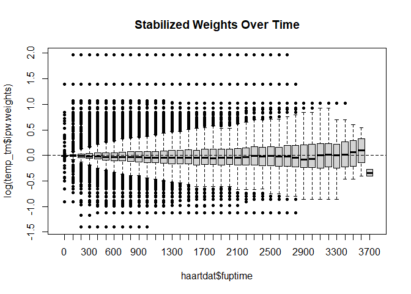

ipw
The ipw package provides a flexible toolkit for estimating Inverse Probability Weights (IPW) to fit marginal structural models. Functions to estimate the probability to receive the observed treatment, based on individual characteristics. The inverse of these probabilities can be used as weights when estimating causal effects from observational data via marginal structural models. Both point treatment situations and longitudinal studies can be analysed. The same functions can be used to correct for informative censoring.
Key Features
- Point Treatment & Longitudinal Data: Functions to handle both static exposures and time-varying confounding.
- Wide Range of Models: Support for binomial, multinomial, ordinal, and continuous (Gaussian) exposures.
- Survival Analysis: Integration with Cox proportional hazards models for time-to-event data.
- Diagnostic Tools: Built-in plotting functions to assess weight stability and the positivity assumption.
Installation
install.packages("ipw")Or the development version from GitHub:
# install.packages("remotes")
remotes::install_github("TranHung93/ipw")Documentation: https://tranhung93.github.io/ipw/
Example: Point Treatment Causal Inference
This example simulates data with a continuous confounder (l) and a binomial exposure (a) to estimate a marginal causal effect of 10.
library(ipw)
library(survey)
# 1. Simulate data
set.seed(123)
n <- 1000
simdat <- data.frame(l = rnorm(n, 10, 5))
a.lin <- simdat$l - 10
pa <- exp(a.lin)/(1 + exp(a.lin))
simdat$a <- rbinom(n, 1, prob = pa)
simdat$y <- 10*simdat$a + 0.5*simdat$l + rnorm(n, -10, 5)
# 2. Estimate IPW weights
temp <- ipwpoint(
exposure = a,
family = "binomial",
link = "logit",
numerator = ~ 1,
denominator = ~ l,
data = simdat)
# 3. Fit Marginal Structural Model (MSM)
msm <- svyglm(y ~ a,
design = svydesign(~1, weights = ~temp$ipw.weights, data = simdat))
summary(msm)
#>
#> Call:
#> svyglm(formula = y ~ a, design = svydesign(~1, weights = ~temp$ipw.weights,
#> data = simdat))
#>
#> Survey design:
#> svydesign(~1, weights = ~temp$ipw.weights, data = simdat)
#>
#> Coefficients:
#> Estimate Std. Error t value Pr(>|t|)
#> (Intercept) -6.2885 0.2757 -22.81 <2e-16 ***
#> a 10.6622 0.8083 13.19 <2e-16 ***
#> ---
#> Signif. codes: 0 '***' 0.001 '**' 0.01 '*' 0.05 '.' 0.1 ' ' 1
#>
#> (Dispersion parameter for gaussian family taken to be 22.76977)
#>
#> Number of Fisher Scoring iterations: 2Example: Time-Varying Weights
For longitudinal research, such as the HIV cohort in haartdat, ipwtm calculates the cumulative product of weights over time.
library(ipw)
library(survival)
data(haartdat)
# Estimate time-varying weights for HAART initiation
temp_tm <- ipwtm(
exposure = haartind,
family = "survival",
numerator = ~ sex + age,
denominator = ~ sex + age + cd4.sqrt,
id = patient,
tstart = tstart,
timevar = fuptime,
type = "first",
data = haartdat
)
# Visualize weight stability
ipwplot(weights = temp_tm$ipw.weights, timevar = haartdat$fuptime,
binwidth = 100, main = "Stabilized Weights Over Time")